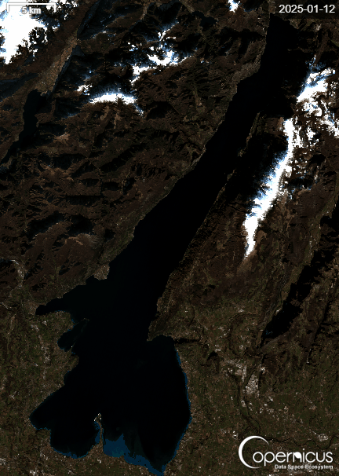
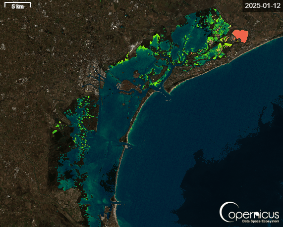

Capitolo I
Lago di Garda
Dall'eutrofizzazione cronica al lento ritorno dell'oligotrofia.
Educazione Civica · Gruppo 2 · 2026
Come cambia la qualità dell'acqua nell'anno Un viaggio nei dati ARPAV e nelle immagini Sentinel-2 tra il Lago di Garda e la Laguna di Venezia.

Capitolo I
Dall'eutrofizzazione cronica al lento ritorno dell'oligotrofia.

Capitolo II
Stagioni, clorofilla e sedimenti in un ecosistema fragile.
L'acqua è la prima infrastruttura del territorio. Sostiene città, agricoltura, turismo e biodiversità. Misurarne la qualità — fosforo, clorofilla, trasparenza, ossigeno disciolto — significa leggere lo stato di salute di intere comunità. Grazie ai dati aperti di ARPAV e alle immagini di Copernicus Sentinel-2 oggi possiamo osservare questi cambiamenti con una precisione impensabile fino a vent'anni fa.